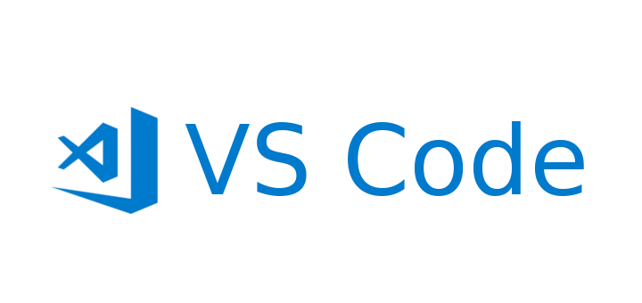

Pŕactico 1: Editores de código
Correspondiente a la sesión del jueves, 19 de marzo de 2026
¿Qué son los editores de código?
Son programas para escribir y editar código fuente de distintos lenguajes. El uso de este tipo de herramientas es popular entre especialistas de la programación y analistas de datos. Los editores de código permiten el uso de distintos lenguajes, tanto de programación como de comunicación, por ejemplo, el español.
Algunos editores de código reconocidos son:
Emacs: es uno de los primeros editores de código, lanzado en 1985, y creado por Richarch Stallman, quien es el creador del movimiento Software libre.
Sublime Text: es un editor de código más intuitivo que Emacs pero tiene licencia de pago.
Atom: otro editor de código que es de código abierto pero está descontinuado.
Visual Studio Code
Positron: editor de código creado por Posit (empresa a cargo de RStudio) que se inspira en Visual Studio Code.
En este práctico aprenderemos a usar Visual Studio Code.
¿Qué es Visual Studio Code?

Es un editor de código avanzado desarrollado por Microsoft que es de acceso gratuito. Actualmente es uno de los editores predilectos debido a su eficiencia y alto nivel de personalización.
Principales ventajas
- Es un programa liviano y extensible, por tanto, personalizable
- Soporta múltiples lenguajes de programación (Python, R, HTML, etc)
- Facilita la aplicación de control de versiones
- Terminal integrada
- Ideal para flujos de trabajo reproducible (Git/GitHub y documentos dinámicos)
- Integra copilot
Instalación del programa
Interfaz
Paso a paso Interfaz VSCode
En este punto la idea es presentar cada sección de la interfaz y sus opciones
Menú superior (describir los más importantes)
Archivos
Aquí se encuentran las principales opciones que existen para trabajar con documentos y/o carpetas.
Ejemplo: Crear archivo; Guardar archivo; Abrir carpeta, etc.
Edición
Ofrece alternativas de edición del documento.
Ejemplo: Copiar; Pegar; Deshacer; Encontrar, etc.
Barra de herramientas
Buscador
El software tiene un buscador de archivos integrado
Opera en distintos niveles de anidación: permite ubicar palabras
buscando en todos los documentos y carpetas del directorio
Documentos
VSCode trabaja con carpetas como áreas de trabajo.
Cada carpeta puede contener múltiples archivos y subcarpetas.
Se puede abrir una carpeta existente o crear una nueva desde VSCode.
Los archivos pueden ser de cualquier tipo: código fuente, texto plano, datos, etc.
La estructura de carpetas y archivos es clave para la organización y reproducibilidad (ej: protocolo IPO).
Extensiones
Las extensiones son complementos que agregan funcionalidades a VSCode.
Existen extensiones para diferentes lenguajes de programación, herramientas y flujos de trabajo.
Buscar e instalar extensiones: desde el Marketplace de VSCode.
Abre la vista de extensiones con el ícono de cuadrados en la barra lateral o con el atajo
Ctrl+Shift+X.Busca las extensiones por nombre (ej: “Quarto”, “R”, “Zotero”).
Haz clic en “Install” para instalar cada extensión.
Reinicia VS Code si es necesario para activar las extensiones.
Shortcuts
Ctrl + N: Crear documento
Ctrl + S: Guardar documento
Ctrl + Shift + P: Abrir barra de comandos
Ctrl + Shift + K: Preview Quarto
Ctrl + K + C: Añadir comentario
Ctrl + K + T: Cambiar tema de VSCode
Actividades prácticas
Actividad 1
Instale las siguientes extensiones:
Quarto
Markdown Preview Enhanced
VSCode-pets
Actividad 2
Cree una carpeta en el escritorio del computador siga las siguientes instrucciones:
Abra la carpeta desde VSCode para que el programa la interprete como el directorio de trabajo
Genere un nuevo archivo y escriba un breve texto en él
Guárdelo en la carpeta que creó anteriormente
Bonus: Busque algún contenido clave del documento utilizando las herramientas dispuestas en la barra lateral
Actividad 3 (opcional)
Instale la extensión de R
Corra algún código en VSCode